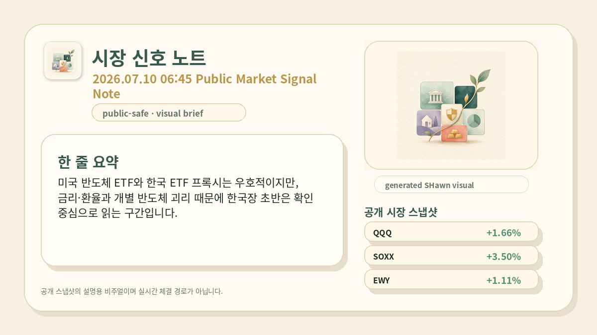
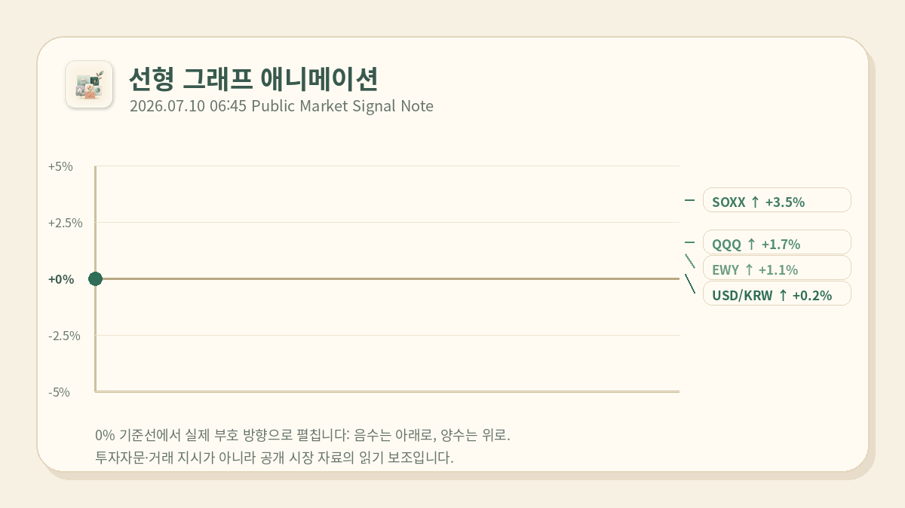

PUBLIC MARKET NOTE
PUBLIC MARKET NOTE

미국 반도체 ETF와 한국 ETF 프록시는 우호적이지만, 금리·환율과 개별 반도체 괴리 때문에 한국장 초반은 확인 중심으로 읽는 구간입니다.

| 08:45 장전 | KOSPI200 계열과 대형 반도체가 같은 방향인지 확인합니다. |
| 09:03 개장 리셋 | 장전 가정을 실제 체결 가격과 지수 흐름으로 다시 읽습니다. |
| 09:20 확인 | 초반 움직임이 유지되는지, 또는 식는지 분리합니다. |
공개 시장 자료를 읽기 쉽게 정리한 것이며 개인 판단을 대신하지 않습니다. 자동화된 거래 기능과 연결되어 있지 않습니다.